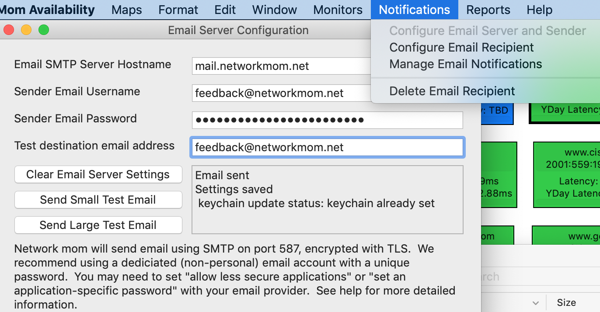

Configure Email Server and Sender
Use Notifications -> Configure Email Server and Sender to configure your email server and “from” address for alerts and reports.
Network Mom Availability sends email using SMTP encrypted with TLS on TCP port 587. Email providers require an authenticated username and password to send email. Many email providers require 2-factor authentication for the first use of email which Network Mom Availability does not support.
This may require you to request an “application specific password” (iCloud) or “allow less secure applications” (Google) for you to send email successfully with your provider.
Network Mom Availability saves the email password in process memory and (encrypted) in the Apple keychain on the monitoring host. Whether you enable iCloud keychain syncing is up to you. Network Mom Availability does not save the email password in any other location. Anyone with the user account password of the monitoring Macintosh can run Utilities -> Keychain Access to view the email password.
We recommend using a dedicated non-personal email account with a unique password for originating alerts and reports. You need to monitor this email address from your email client to receive “email permission code” replies and bounce messages.
Network Mom Availability version 1.0 has a known interoperability problem with Yahoo Mail preventing report attachments > 8KB. We’ve added a “send large test email” button to the Notifications -> Configure Email Server and Sender page to detect if this applies to your email provider.
To save your email server configuration, click Send Small Test Email or Send Large Test Email . Network Mom Availability will only save your configuration if it sends the email successfully. Make sure to check if you received the email.
A reminder that email delivery is not instantaneous. Different providers have different response times for delivering email. Choosing a “fast and reliable” email provider may be helpful. Network outages can also prevent email delivery, which would prevent outage alert delivery.

https://networkmom.net feedback@networkmom.net Copyright 2019 Network Mom LLC